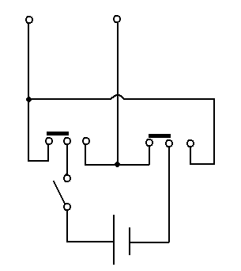

完成日期：2013/02/07 19:35
類型：電源
材料：9V電池、電池扣、03_0001*3、積木。
目前為止最複雜的作品，看內部的電線就知道了(右上)，整體將線路封包在模組內，外部使用音源線作為連結。02_0002可能將做為往後幾個月計劃的主要電源供應模組。02_0002比02_0001還進一步的地方是，可以進行電源正負的切換，因為手邊沒有連動開關，所以用兩個二切開關負責切換電流方向，另一個開關則用做總電源。
原始電路圖:

2013/02/10，改良了02_0002，其實只是改一下配置，不過因為這一改害得電線斷掉，又花了我不少時間重新銲接...，此版本暫稱02_0002_a。
Copyright © 2013 飜貓Research Team